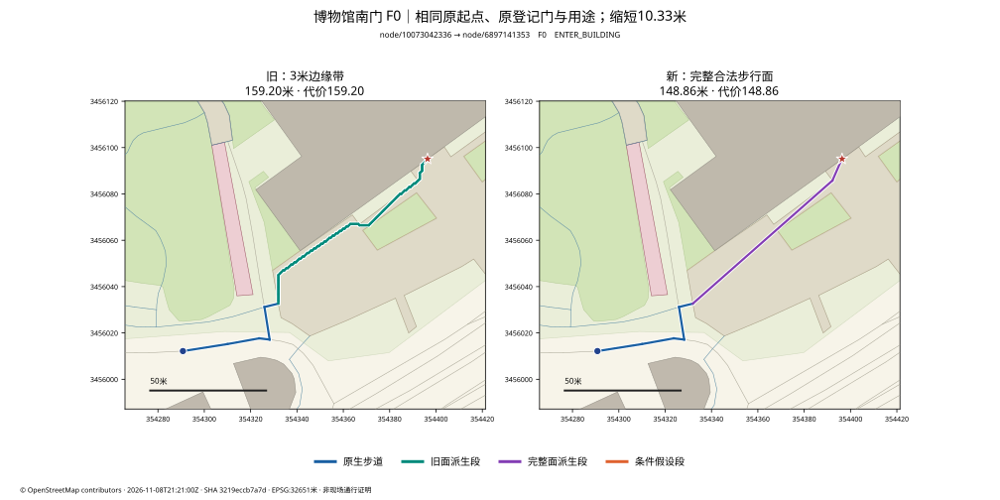
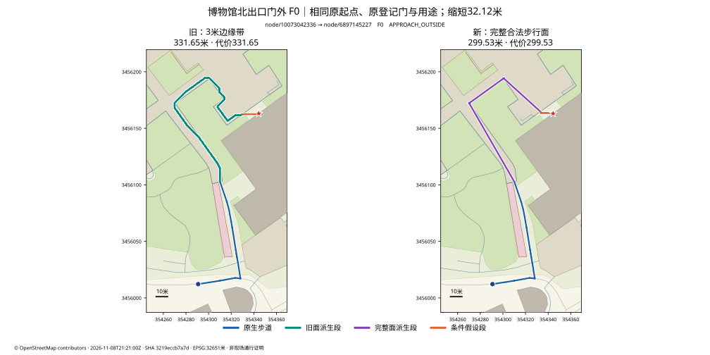
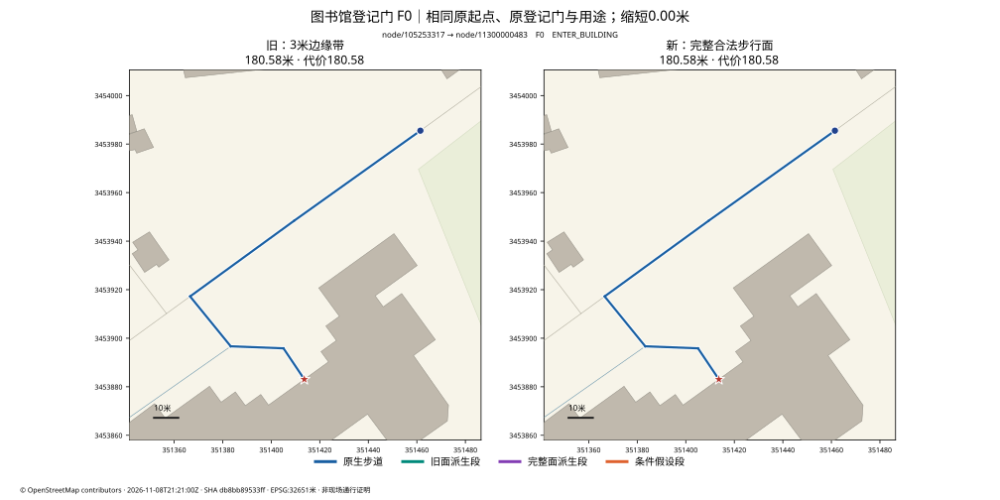
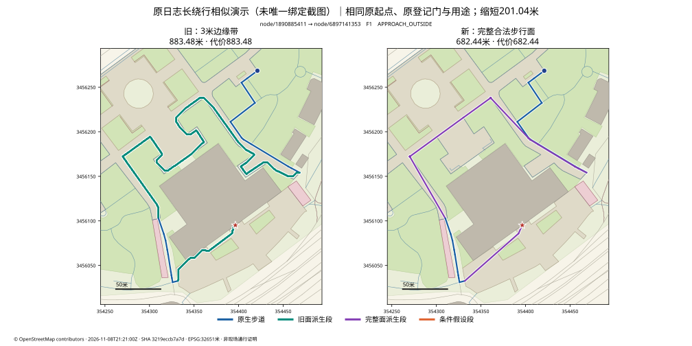
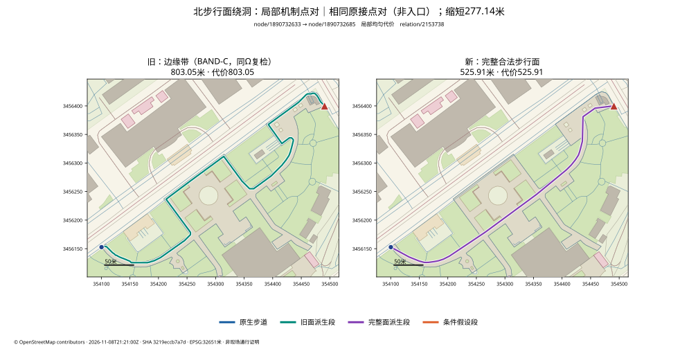
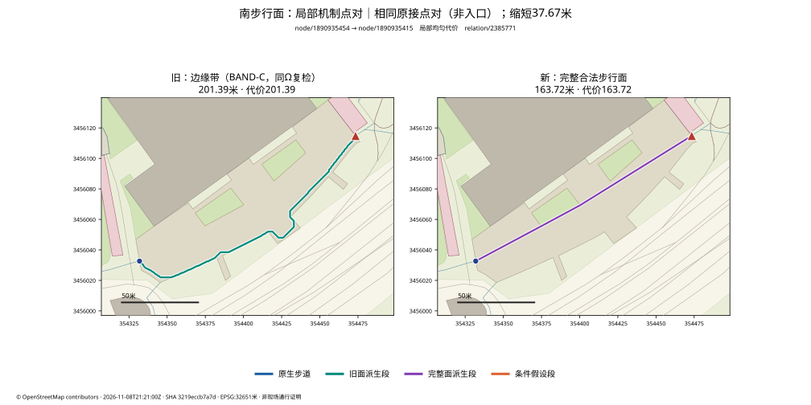

这些图片来自实际求解几何。进入实际计算APP（需按README启动本机服务） · 运行说明 · 完整结果与边界
灰色建筑、绿色草地、黄色已标步行面仍保留；蓝色为原生步道，紫色为完整面派生段，橙色为缺标条件假设。新边是地图面内计算路线，不是新发现的真实道路。北门仍为exit。
159.20 → 148.86米，缩短10.33米。打开矢量图 · PNG

331.65 → 299.53米，缩短32.12米。打开矢量图 · PNG

180.58 → 180.58米，缩短0.00米。打开矢量图 · PNG

883.48 → 682.44米，缩短201.04米。打开矢量图 · PNG

803.05 → 525.91米，缩短277.14米。打开矢量图 · PNG

201.39 → 163.72米，缩短37.67米。打开矢量图 · PNG

| 请求 | 方法 | 旧状态 | 旧长度米 | 新长度米 | 缩短米 | 新假设段米 |
|---|---|---|---|---|---|---|
| APP-01 | F0 | ROUTED_NATIVE_OR_MAPPED | 159.19560018180962 | 148.86312206979613 | 10.33247811201349 | 0.0 |
| APP-02 | F1 | ROUTED_NATIVE_OR_MAPPED | 159.19560018180962 | 148.86312206979613 | 10.33247811201349 | 0.0 |
| APP-03 | F0 | ROUTED_CONDITIONAL | 331.64743542427374 | 299.53144993549483 | 32.115985488778904 | 12.534189979232385 |
| APP-04 | F1 | ROUTED_CONDITIONAL | 331.9223356481811 | 300.7841854102122 | 31.138150237968887 | 9.6815800976874 |
| APP-05 | F0 | ROUTED_CONDITIONAL | 698.7795854257809 | 666.6635999370019 | 32.11598548877896 | 12.534189979232385 |
| APP-06 | F1 | ROUTED_CONDITIONAL | 699.0544856496881 | 667.9163354117193 | 31.13815023796883 | 9.6815800976874 |
| APP-07 | F0 | ROUTED_NATIVE_OR_MAPPED | 180.58111866323975 | 180.58111866323975 | 0.0 | 0.0 |
| APP-08 | F1 | ROUTED_NATIVE_OR_MAPPED | 180.58111866323975 | 180.58111866323975 | 0.0 | 0.0 |
面内局部机制7点对另见RESULTS；不与完整APP请求混合分母。不代表现场公众可以通行。